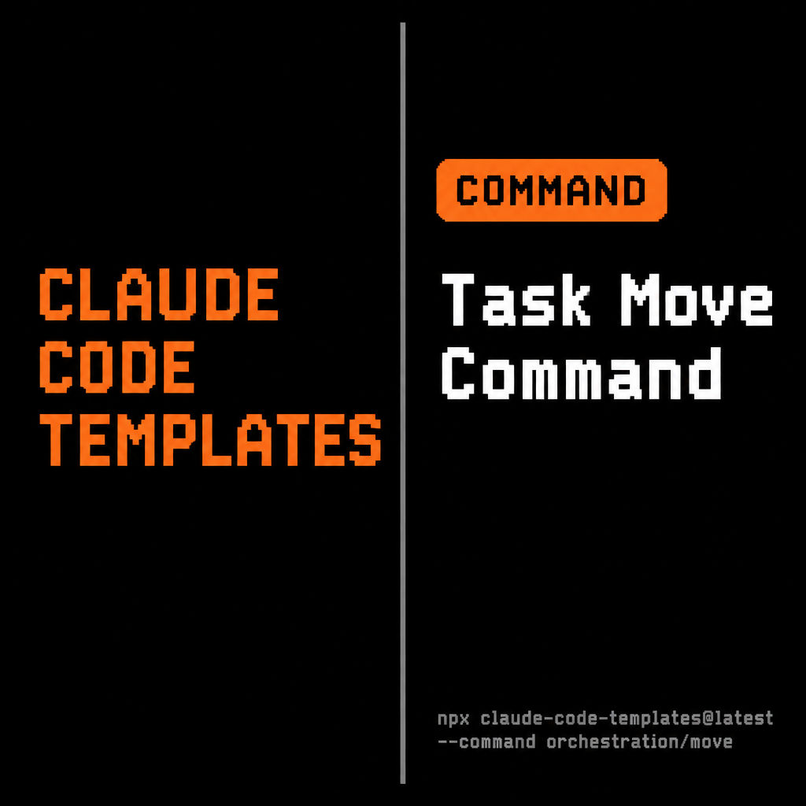

What is the Task Move Command?
The Task Move command is a custom Claude Code slash command from the orchestration component category in Claude Code Templates. It manages a file-based task workflow — moving task files between status folders (todos, in_progress, qa, completed, on_hold) while enforcing valid transitions, checking dependencies, and logging every move to an audit trail. It's part of a broader task-orchestration suite that also includes commands for checking status, starting work, and generating reports.
graph LR
A[📝 Task File] --> B[🔀 Task Move Command]
B --> C[✅ Status Folder Updated]
C --> D[📊 Audit Trail Logged]
style B fill:#F97316,stroke:#fff,color:#000
Key Capabilities
- Status Transitions (moves a task file between
todos,in_progress,qa,completed, andon_hold) - Transition Validation (rejects invalid moves, e.g. jumping straight from
completedback totodos) - Dependency Checks (warns when a task depends on another task that isn't finished yet)
- Bulk Operations (move a comma-separated list, a wildcard pattern, or every task matching a
--filter) - Dry Run Mode (
--dry-runpreviews the move without touching any files) - Full Audit Trail (every move updates the task's metadata, the status tracker, and a permanent history log)
Installation
Install the Task Move command using the Claude Code Templates CLI:
npx claude-code-templates@latest --command orchestration/moveWhere is the command installed?
The command file is downloaded and saved directly into .claude/commands/ in your project — the CLI flattens the orchestration/ category, keeping only the filename:
your-project/
├── .claude/
│ └── commands/
│ └── move.md # ← Command installed here
├── tasks/
│ ├── todos/
│ ├── in_progress/
│ ├── qa/
│ ├── completed/
│ └── on_hold/
└── package.json/move once installed, not /task-move as its own internal docs describe. Claude Code names a custom command after the markdown file in .claude/commands/ — the source category folder is only used for organizing the catalog, not for the resulting slash command name.
How to Use the Command
Start Claude Code in a project that already has a task folder structure (tasks/todos, tasks/in_progress, etc.), then call the command with a task ID and the target status:
# Start Claude Code
claude
# Then run the installed command
/move TASK-001 in_progressClaude Code loads move.md, follows its protocol, and:
- Verifies
TASK-001exists in its current status folder - Confirms the transition to
in_progressis valid - Moves the file, updates its status metadata, and records the change in the audit trail
Usage Examples
Example 1: Standard Developer Workflow
claude
> /move TASK-001 in_progress
> /move TASK-001 qa "Implementation complete, ready for testing"
> /move TASK-001 completed "Code review approved"Result: TASK-001 moves through todos → in_progress → qa → completed, with each transition timestamped and reasoned in the audit log.
Example 2: Blocking on a Dependency
claude
> /move TASK-004 on_hold "Waiting for auth API from TASK-001"
# Later, once TASK-001 is unblocked
> /move TASK-004 todos "Dependencies resolved"Result: the command warns if TASK-004's dependency isn't met, and records the hold reason so any teammate can see why it stalled.
Example 3: Bulk Move with a Dry Run
claude
> /move --filter "priority:high status:todos" in_progress --dry-runResult: a preview of every high-priority task that would move from todos to in_progress, without changing any files — useful for confirming a batch update before committing to it.
Status Transition Map
| From | Allowed To |
|---|---|
todos |
in_progress, on_hold |
in_progress |
qa, on_hold |
qa |
completed, in_progress (failed QA) |
on_hold |
todos, in_progress |
completed |
None (terminal state) |
Advanced Options
--force— bypasses transition validation (use with caution)--dry-run— shows what would happen without executing the move--assign <agent>— assigns the task to a specific agent as part of the move--estimate <time>— updates the time estimate when starting work
TASK-STATUS-TRACKER.yaml). Pair it with the rest of the orchestration suite — commands for checking status and generating reports — if you want the full workflow rather than just the move step.
Official Documentation
For more information about building and installing custom slash commands in Claude Code, see the official documentation.
Created by Daniel Ávila